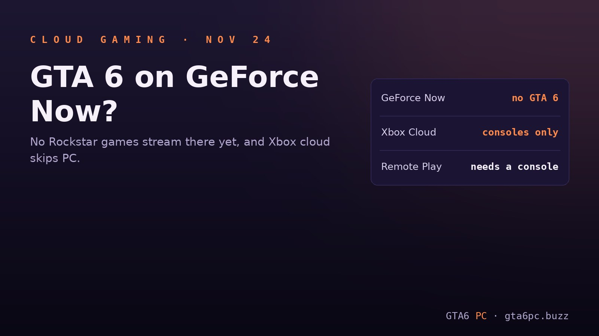
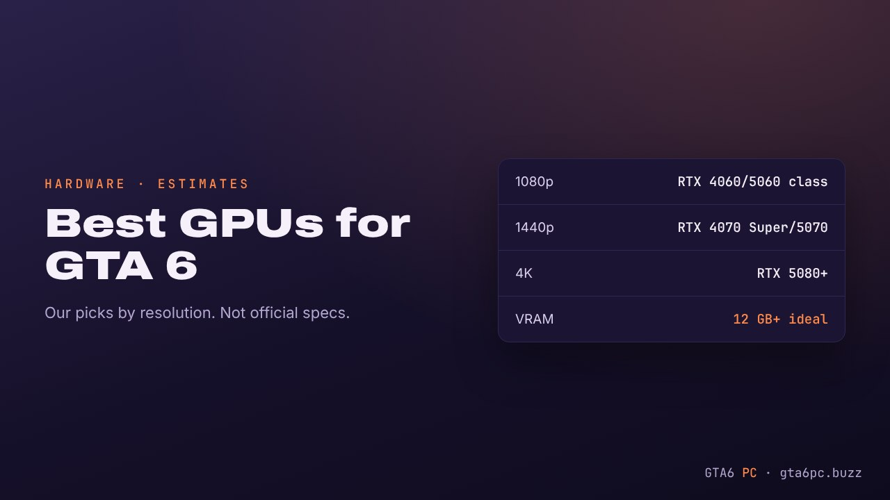
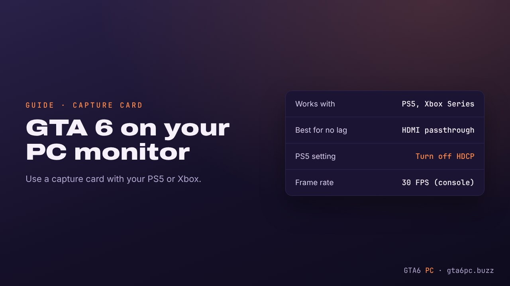

Release date & news
The GTA 6 PC release date, launch expectations, GTA 6 Online, sales and Take-Two news.

GTA 6 on GeForce NowWill GTA 6 Come to GeForce Now? Cloud Gaming on PC Explained
GTA 6 streams to Xbox consoles through Xbox Cloud Gaming, but not to PC. GeForce Now has no Rockstar games at all. Here is every cloud option for PC players, and what would have to change.
 GTA 6 PC anti-cheat
GTA 6 PC anti-cheatWill GTA 6 PC Use BattlEye Anti-Cheat? What We Know So Far
Rockstar added BattlEye to GTA Online on PC in September 2024, after nine years without official anti-cheat. Rockstar has said nothing about GTA 6 PC anti-cheat yet, but the GTA Online precedent points one way.
 Rockstar crackdown
Rockstar crackdownRockstar Takes Action Against GTA 6 PC Port Projects as Leonida Shuts Down
Leonida, the open-source project trying to run GTA 6 on PC, has shut down after its developer stepped away, and several GTA 6 Discord servers have reportedly been taken down. Here is what is confirmed, what is only reported, and what happens next.

Best GPUsBest Graphics Cards for GTA 6 on PC: 1080p, 1440p and 4K (Estimates)
Which GPU will you need for GTA 6 on PC? Our estimates for 1080p, 1440p and 4K, based on how the game runs on PS5 Pro and Rockstar's past PC releases.
 Gaming laptops
Gaming laptopsWill GTA 6 Run on a Gaming Laptop? What to Look For (Estimates)
Planning to play GTA 6 on a laptop? Here's what kind of gaming laptop will likely handle it, what to avoid, and why storage and cooling matter as much as the GPU.

Capture card guideHow to Play GTA 6 on Your PC Monitor with a Capture Card
Want GTA 6 on your PC monitor, or to stream it? A capture card can show your PS5 or Xbox on your PC. Here's how it works, what to buy and how to avoid lag.
 Take-Two earnings
Take-Two earningsWhat Take-Two Said About GTA 6 (and PC) in Its Latest Earnings
Take-Two's November 2026 earnings call said GTA 6 pre-orders were far above expectations, but said nothing about a PC version. Here are the key takeaways.
 Sales & PC
Sales & PCGTA 6 Sales Forecasts: Record Pre-Orders and What PC Could Add
Analysts forecast $3.25–5.2 billion in GTA 6's first week. Here's what the pre-order records show, and why a PC release could add a second wave of sales.
 When on PC?
When on PC?When Is GTA 6 Coming to PC? Release Date Status (November 2026)
GTA 6 is out on PS5 and Xbox Series X|S, but Rockstar hasn't set a PC date. Here's the reported Q1 2027 window, what Rockstar's history suggests, and what to watch for.
 PC launch
PC launchGTA 6 PC Launch: What to Expect When It Arrives
What the GTA 6 PC launch will probably look like: which stores, which PC features, what hardware you'll need, and which claims to ignore until Rockstar confirms them.
 GTA 6 Online
GTA 6 OnlineGTA 6 Online on PC: Release Date and What We Know
GTA 6 launched without an online mode. Reports point to a 2027 release for GTA 6 Online. Here's what that means for PC players and GTA Online.
 Rockstar PC history
Rockstar PC historyEvery Rockstar PC Port and What It Says About GTA 6 on PC
From GTA IV to Red Dead Redemption 2, here's how long Rockstar's PC versions took, how they launched, and what that history suggests for GTA 6 on PC.
 PC Game Pass?
PC Game Pass?Will GTA 6 Come to PC Game Pass? What Microsoft, Rockstar and Take-Two Have Said
GTA 6 is not on Xbox Game Pass or PC Game Pass, and no inclusion has been announced. Here is what the stores show, why Take-Two avoids day-one subscription releases, and when a Game Pass debut could realistically happen.
 PC crossplay?
PC crossplay?Will GTA 6 on PC Have Crossplay with PS5 and Xbox?
GTA 6 launches as a single-player game with no online mode and no crossplay announced. Here is what GTA Online's history says about crossplay, and what PC players should expect.
 PC pre-order?
PC pre-order?Can You Pre-Order GTA 6 on PC? What the Stores Actually Show
There is no GTA 6 PC pre-order anywhere. No Steam, Epic or Rockstar Launcher page exists, and no PC keys are real. Here is what the stores show and when a real pre-order could open.
 First patch live
First patch liveGTA 6 Update 1.002.002: First Patch Fixes Autosave, Crashes and More
Rockstar rolled out GTA 6 update 1.002.002 on November 23, 2026, the first patch since launch. It fixes autosave, crashes, stuck weather and more on PS5 and Xbox. Here are the full patch notes and what they mean for PC.
 Launcher required?
Launcher required?Will GTA 6 on PC Need the Rockstar Games Launcher?
Rockstar has not announced a PC version of GTA 6, so no launcher requirement is confirmed. But GTA V Enhanced, Rockstar's latest PC release, requires a Rockstar account and the Rockstar Games Launcher even on Steam. Here is what to expect.